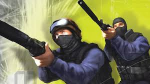

About CS
Counter-strike
- Counter-Strike (CS) is a series of multiplayer tactical first-person shooter video games in which teams of terrorists battle to perpetrate an act of terror (bombing, hostage-taking, assassination) while counter-terrorists try to prevent it (bomb defusal, hostage rescue, escort mission). The series began on Windows in 1999 with the release of the first game, Counter-Strike. It was initially released as a modification ("mod") for Half-Life that was designed by Minh "Gooseman" Le and Jess "Cliffe" Cliffe before the rights to the mod's intellectual property were acquired by Valve, the developers of Half-Life, who then turned Counter-Strike into a retail product released in 2000.
Version Of Counter-Strike
Condition Zero
- Main article: Counter-Strike: Condition Zero Counter-Strike was followed up with Counter-Strike: Condition Zero, developed by Turtle Rock Studios and released in 2004. It used the Half-Life GoldSrc engine, similarly to its predecessor. Besides the multiplayer mode, it also included a single-player mode with a "full" campaign and bonus levels. The game received mixed reviews in contrast to its predecessor and was quickly followed with a further entry to the series titled Counter-Strike: Source.[12]

Counter-Strike 2
- Main article: Counter-Strike 2
On March 22, 2023, Valve announced Counter-Strike 2, which utilizes the Source 2 game engine. It was originally announced as a free upgrade to Global Offensive with a summer 2023 release date.[17][18][19] On September 1, 2023, it was released as a limited beta,[20][21] and the game replaced Global Offensive on September 27.
.jpg)
CS-GO
- Global Offensive received positive reviews from critics on release, who praised the game for its gameplay and faithfulness to the Counter-Strike series, though it was criticized for some early features and the differences between the console and PC versions. Since its release, it has drawn in an estimated 11 million players per month and remains one of the most played games on Valve's Steam platform. In December 2018, Valve transitioned the game to a free-to-play model, focusing on revenue from cosmetic items.